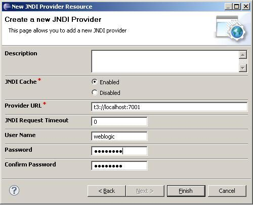

In the recipe, Exposing an EJB session bean as a service on the OSB using the EJB transport, we have assumed that the EJB session bean is deployed on the OSB server and by that in the same WebLogic domain.
If the EJB session bean to invoke is deployed on another WebLogic domain, which in the real world is the more typical scenario, then a JNDI Provider resource needs to be created on the OSB configuration.
Make sure that the EJB session bean is deployed to the OSB server as shown in the Introduction section of this chapter.
Import the OSB project containing the solution from the recipe, Exposing an EJB session bean as a service on the OSB using the EJB transport, into Eclipse from \chapter-4\getting-ready\using-jndi-provider-to-invoke-remote-ejb.
In Eclipse OEPE, perform the following steps to register a JNDI Provider resource:
JNDIProviderEJB into the File name field and click on Next. t3://localhost:7001 into the Provider URL field.
ejb:JNDIProviderEJB:CustomerManagementService#cookbook.model.services.CustomerManagement. The only difference to the old URI is the JNDI Provider specified after the ejb: prefix.The business service is now using the configured JNDI Provider to get and cache the EJB stubs.
The preferred communication mechanism from an OSB to a WebLogic server domain is either t3 or t3s, as used here.
A JNDI Provider allows us to specify the communication protocols and security credentials used to retrieve the EJB subs bound in a JNDI tree located on a remove WebLogic server domain.
The JNDI Provider also implements an efficient caching mechanism for the remote connections as well as the EJB stubs.
If the EJBs are located in the same domain, a JNDI Provider can also be used to specify credentials and take advantage of the caching mechanism, but it's optional.